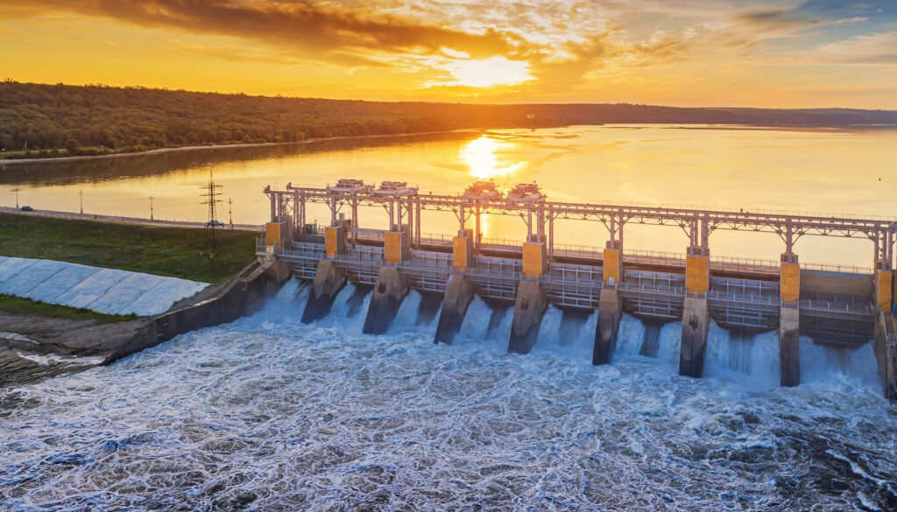

Odnawialne źródła energii
Źródła energii, które wykorzystują w produkcji surowce odnawialne.
Według danych z roku 2022 z odnawialnych źródeł energii pochodziło
w Unii Europejskiej 39,4% prądu, co jest wynikiem względem roku 2012r.
o 14,3% większym. W Polsce jest to około 10% w roku 2022r., a wzrost
jaki w tej statystyce odnotowaliśmy w ciągu dekady równy jest 6%.
Oto najważniejsze odnawialne źródła energii:
Energia wodna

Energia wiatrowa

Energia słoneczna

Energia geotermalna